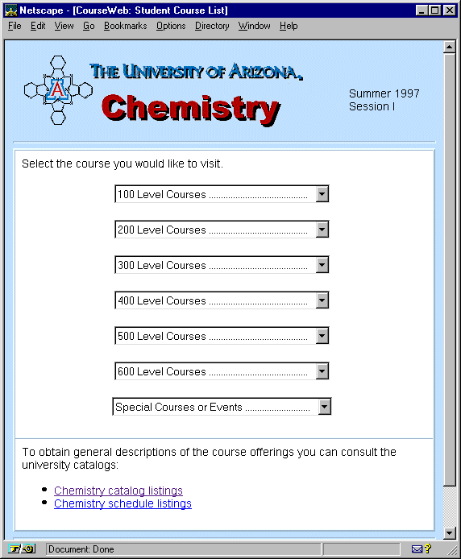
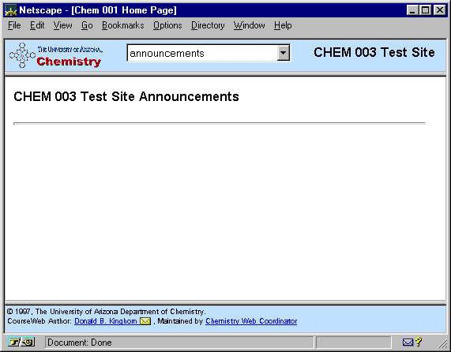

CourseWeb - The Student Interface
Course Listings Page
The user chooses the course website they would like to visit from a
set of drop-down menus. After choosing the course the main course webpage
appears (see below)

Basic Student Interface

The Student Interface consists of three parts.
- Top/Menu Section - the small top section contains a drop-down menu
of pages and links for the course. (The instructor interface allows the
course instructor to create and modify the menu items of this menu)
- Content Section - the large central section displays the content of
the webpages. All menu items and linked pages will display in this section.
- Copyright, Author and contact Section - this small section at the bottom
is used to present fixed information about CourseWeb